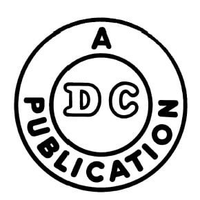
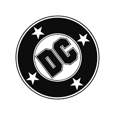

Founding of DC Comics
DC Comics, originally known as National Allied Publications, was founded in 1934 by entrepreneur Major Malcolm Wheeler-Nicholson. The company became a pioneer in the comic book industry, publishing some of the first superhero stories ever told.
Major Malcolm Wheeler-Nicholson, the founder of DC Comics, revolutionized the comic book industry by introducing original content in comic books.
DC's first logo appeared in 1940, reflecting the company's early publications and the rise of the superhero genre with characters like Superman and Batman.
First Logo and Its Evolution
The first logo of DC Comics appeared on the cover of *Detective Comics* #27 in 1940, marking the beginning of an era. Over the years, the logo has undergone several redesigns, each representing a new chapter in the company's storied history.
The original DC logo, often referred to as the *DC bullet*, was simple yet iconic, with bold letters that became synonymous with the golden age of comics.